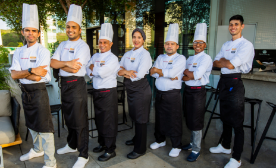

Nossa Família Stroggonoferia
A Stroggonoferia é mais do que um restaurante, é a extensão da nossa casa. Somos uma equipe apaixonada por gastronomia e, especialmente, pelo strogonoff que aprendemos a amar com a Vovó Nonô. Cada membro da nossa equipe, desde os cozinheiros aos atendentes, compartilha o desejo de oferecer uma experiência única e saborosa para você.
Acreditamos que um bom prato de strogonoff pode aquecer o coração e criar memórias. Por isso, nos dedicamos a cada detalhe, desde a escolha dos ingredientes até o sorriso no rosto de quem serve.
Fale Conosco! Adoramos Ouvir Você!
Quer fazer um pedido, reservar uma mesa, dar uma sugestão ou apenas dizer um "olá"? Entre em contato!
- Endereço da Felicidade: Rua das Delícias, 123, Bairro Bom de Garfo, Cidade Saborosa - ES, CEP 12345-678
- E-mail Quentinho: contato@stroggonoferia.com.br
- Telefone da Vovó (Pedidos): (43) 3303-4358